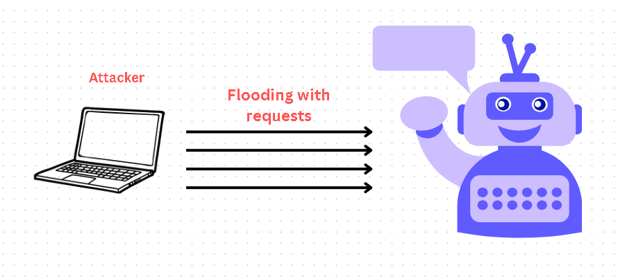

What is a DoS Attack?
A Denial of Service (DoS) attack is an attempt to make a machine or network resource unavailable to its intended users by overwhelming it with a flood of illegitimate requests.
Examples of DoS Attacks
- HTTP Flooding: Overwhelming the server with HTTP requests.
- UDP Amplification: Exploiting open servers to amplify traffic.
- Slowloris Attack: Keeping multiple connections open to exhaust resources.
Solutions to Prevent DoS Attacks
- Rate Limiting: Limit the number of requests a user can make.
- CAPTCHA: Verify users with CAPTCHAs during high traffic.
- Load Balancing: Distribute traffic across multiple servers.
- WAF: Use Web Application Firewalls to block malicious traffic.
